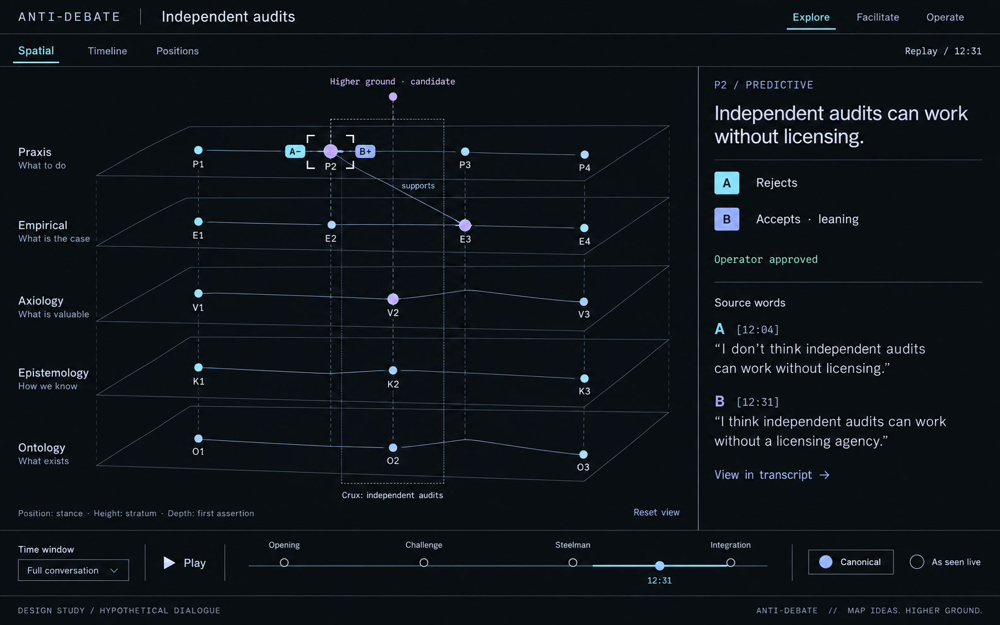
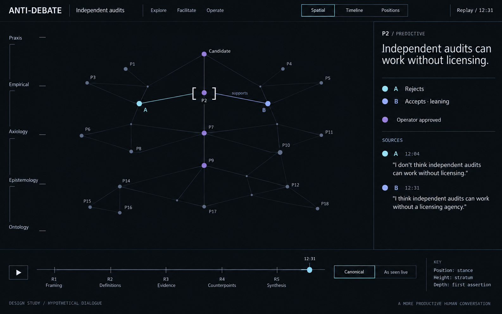
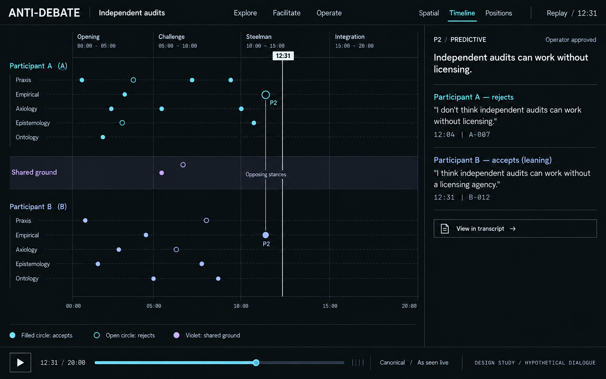
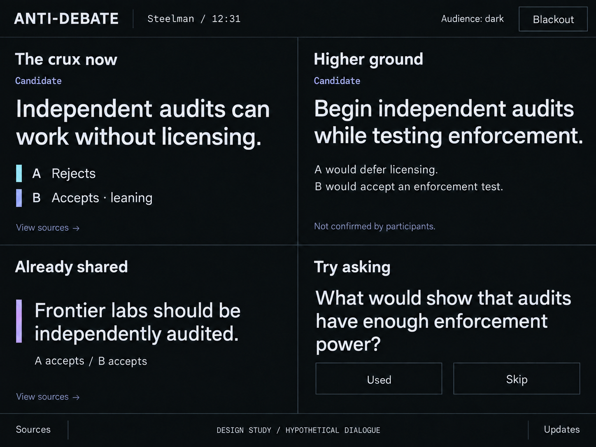

A conversation instrument.
Two spatial directions, followed by a timeline and facilitator cockpit. Near-black surfaces, readable evidence, precise structure. These are generated visual concepts using hypothetical dialogue.
Starting recommendation: Section's clear hierarchy with Field's restraint about drawing every edge.


Structure you can read.
Open planes and stable orientation make the argument's layers visible. Recommended starting point.
Concept limitation: grid geometry and colored nodes need semantic correction. The generated footer slogan is not proposed product copy.


Space to investigate.
A quieter spatial field, with selected paths carrying the structure. More atmosphere; less immediate orientation.
Concept limitation: this rendering reads flatter than intended. Participant attachments and relation edges need a clearer distinction.

The conversation as a score.
The existing temporal reading model carries into the new aesthetic. Selection should stay synchronized with Spatial and Positions.
Revised to hide future marks and remove invented relation labels. Illustrative point positions are not exact timestamps.

A glance, then back to the room.
Large prose and fixed positions. The spatial visual language becomes a calm reading instrument.
The fictional crux and higher-ground content illustrate layout only. They are not validated findings or an executable event fixture.
What to react to
Choose the spatial direction first. Then judge whether the evidence panel feels right, whether the type feels sufficiently distinctive, and whether the cockpit is calm enough. A response like “01's structure, 02's restraint, larger source text” is useful.